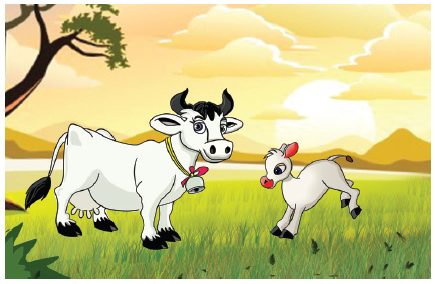

எதிலும் அழகைக் காண விரும்புவது மனிதர்களின் இயல்பு. நாம் நம்மை அணிகலன்களால் அழகு படுத்திக் கொள்கிறோம். அது போல் கவிஞர்கள் தங்கள் கற்பனைத் திறத்தாலும் புலமையாலும் தாங்கள் இயற்றும் பாடல்களில் அழகைச் சேர்க்கின்றனர். இதனை விளக்குவது அணி இலக்கணம் ஆகும். அணி என்பதற்கு அழகு என்பது பொருள்.
கவிஞர் தமது கருத்தைச் சுவையோடு சொல்வதற்கு உதவுவது அணி. மருந்தைத் தேனில் கலந்து கொடுப்பது போல் கருத்துகளைச் சுவைபடக் கூறுவது அணியாகும்.
இயல்பு நவிற்சி அணி
ஒரு பொருளின் இயல்பை உள்ளது உள்ளபடியே அழகுடன் கூறுவது இயல்பு நவிற்சி அணி ஆகும். இதனைத் தன்மை நவிற்சி அணி என்றும் கூறுவர்.
எடுத்துக்காட்டு
தோட்டத்தில் மேயுது வெள்ளைப்பசு -அங்கே
துள்ளிக் குதிக்குது கன்றுக்குட்டி
அம்மா என்குது வெள்ளைப்பசு –உடன்
அண்டையில் ஓடுது கன்றுக்குட்டி
நாவால் நக்குது வெள்ளைப்பசு - பாலை
நன்றாய்க் குடிக்குது கன்றுக்குட்டி
-கவிமணி தேசிக விநாயகனார்

இப்பாடலில் கவிஞர் பசுவும் கன்றும் ஒன்றுடன் ஒன்று கொஞ்சி விளையாடுவதை இயல்பாக எடுத்துக் கூறியுள்ளார். எனவே இது இயல்பு நவிற்சி அணி ஆகும்.
உயர்வு நவிற்சி அணி
ஒரு பொருளின் இயல்பை மிகைப்படுத்தி அழகுடன் கூறுவது உயர்வு நவிற்சி அணி ஆகும்.
எடுத்துக்காட்டு
குளிர் நீரில் குளித்தால்
கூதல் அடிக்குமென்று
வெந்நீரில் குளித்தால்
மேலே கருக்குமென்று
ஆகாச கங்கை
அனல் உறைக்குமென்று
பாதாள கங்கையைப்
பாடி அழைத்தார் உன் தாத்தா
என்று ஒரு தாய் தாலாட்டு பாடுகிறாள். இதில் உயர்வு நவிற்சி அணி அமைந்துள்ளது.
கற்பவை கற்றபின்
1. பின்வரும் பாடலைப் படித்து அதில் அமைந்துள்ள அணியைக் குறிப்பிடுக.
ஆறு சக்கரம் நூறு வண்டி
அழகான ரயிலு வண்டி
மாடு கன்னு இல்லாமத்தான்
மாயமாத்தான் ஓடுது
உப்புப் பாரம் ஏத்தும் வண்டி
உப்பிலிப் பாளையம் போகும் வண்டி
1. நீங்கள் மிகவும் விரும்பிப் பார்த்த இடம் ஒன்றினை இயல்பு நவிற்சியாகவும் உயர்வு நவிற்சியாகவும் விவரிக்க.
1 உள்ளதை உள்ளவாறு கூறும் அணியின் பெயர் யாது?
2 உயர்வு நவிற்சி அணி என்பது யாது?
மொழியை ஆள்வோம்
கேட்க
மனிதநேயத்தை வளர்க்கும் கதைகளைப் பெற்றோர், ஆசிரியரிடம் கேட்க.
பேசுக
1 உங்கள் மீது அதிக அன்பு செலுத்துபவர்கள் யார்? நீங்கள் யார்யார் மீது அன்பு வைத்திருக்கிறீர்கள்? காரணம் கூறுக.
2 நீங்கள் ஒருவருக்குப் பரிசு கொடுக்க விரும்பினால் யாருக்குக் கொடுப்பீர்கள்? என்ன கொடுப்பீர்கள்? எதற்காகக் கொடுப்பீர்கள்?
3 பின்வரும் தலைப்புகளுள் ஒன்று பற்றி மூன்று மணித்துளிகள் பேசுக.
அ) பொது நலம்
ஆ) சமூகத் தொண்டு
படித்து உணர்க.
செல்வி பள்ளிக்கூட மைதானத்தில் அமர்ந்து இருந்தாள். அங்கு ஓடி வந்த முத்து, செல்வி, உன்னைத் தலைமை ஆசிரியர் அழைக்கிறார் என்று கூறியவாரே அவளுடைய சக்கர நாற்காலியைத் தலைமை ஆசிரியர் அறையை நோக்கித் தள்ளிக் கொண்டு போனான். தலைமை ஆசிரியர் செல்வியை ஆறாம் வகுப்பிற்கு அழைத்துச் சென்றார்.
வகுப்பறை கதவு மூடப்பட்டிருந்தது. கதவைத் திறந்ததும் மாணவர்கள் அனைவரும் பிறந்தநாள் வாழ்த்துக் கூறினர். மெழுகுவர்த்திகள் ஒளி வீசின. காகிதத் தோரணங்களால் வகுப்பறை அலங்கரிக்கப்பட்டு இருந்தது. பலூன்கள் பட்பட் என வெடித்தன. மாணவர்கள் அவளுக்குப் பிறந்தநாள் வாழ்த்துப் பாடினர். செல்வியின் கண்களில் ஆனந்தக் கண்ணீர் வழிந்தது.
சொல்லக் கேட்டு எழுதுக.
மனிதநேயம். கடுக்கன். பசிப்பிணி. அன்னை தெரசா. நோபல் பரிசு. கைலாஷ் சத்யார்த்தி. தொழிலாளர். உறுப்புக் கொடை. ஹிதேந்திரன்.
இயல்பு நவிற்சி
அகரவரிசைப்படுத்துக.
ஒழுக்கம், உயிர், ஆடு, எளிமை
அன்பு, இரக்கம், ஓசை, ஐந்து
ஈதல், ஊக்கம், ஏது, ஒளவை
கீழ்க்காணும் தலைப்புகளில் ஏதேனும் ஒன்றைத் தேர்ந்தெடுத்துக் கவிதை எழுதுக.
அ) அன்பு
ஆ) நட்பு
இ) உதவி
பத்தியைப் படித்துக் கீழ்காணும் வினாக்களுக்கு விடையளிக்க.
அரசர் ஒருவர் தம் நாட்டு மக்களிடம் அமைதி என்றால் என்ன என்பதை விளக்கும் வகையில் ஓவியமாக வரைந்து கொடுப்பவர்களுக்கு மிகச்சிறந்த பரிசு வழங்கப்படும் என்று அறிவித்தார். இதையடுத்து நாட்டின் முன்னணி ஓவியர்கள் அமைதியை வெளிப்படுத்தும் வகையில் பல ஓவியங்களை வரைந்து அரண்மனைக்குக் கொண்டு வந்தனர். அரசர் ஒவ்வொரு ஓவியமாகப் பார்த்துக் கொண்டே வந்தார். அழகிய மலையின் அடிவாரத்தில் ஓர் ஏரி இருப்பது போல் ஓவியம் ஒன்று இருந்தது. அது மிகவும் சிறப்பாக இருந்தது. பார்த்த உடனே பறிக்கத் தூண்டும் வகையில் மலர்களின் ஓவியம் ஒன்று இருந்தது. இப்படி ஒவ்வொருவரும் அமைதியைத் தங்களுக்கு தோன்றியபடி ஓவியத்தில் வெளிப்படுத்தி இருந்தனர். ஓர் ஓவியத்தில் ஒரு மலைமேல் இருந்து ஆர்ப்பரித்துக் கொட்டும் அருவியின் படம் வரையப்பட்டிருந்தது. அதிலேயே இடியோடு மழை கொட்டிக் கொண்டு இருந்தது. சற்று உற்றுப் பார்த்தால் அருவியின் கீழே இருந்த மரம் ஒன்றில் பறவைக்கூட்டில் பறவை ஒன்று தனது குஞ்சுகளோடு இருந்தது.
இந்த ஓவியத்தை வரைந்தது யார்? என்று அரசர் கேட்டார். அந்த ஓவியர் வந்தார். இந்த ஓவியத்தில் அமைதி எங்கே இருக்கிறது?’ என்றார் அரசர். அதற்கு ஓவியர் மன்னா, பிரச்சினையும் போராட்டமும் ஆரவாரமும் இல்லாத இடத்தில் இருப்பது அமைதி அன்று. இவை எல்லாம் இருக்கும் இடத்தில் இருந்தும், எதற்கும் கலங்காமலும், தன்னை எதுவும் பாதிக்க விடாமலும் உள்ளுக்குள் அமைதியாக இருப்பதே உண்மையான அமைதி” என்றார்.
1. அமைதி என்றவுடன் உங்கள் மனதில் தோன்றுவது என்ன?
2. இக்கதையில் அமைதி எங்கு இருப்பதாக கூறப்படுகிறது?
3. நீங்கள் இந்த ஓவியப் போட்டியில் பங்கு பெற்று இருந்தால் என்ன ஓவியம் வரைந்து இருப்பீர்கள்?
4. இக்கதைக்குப் பொருத்தமான தலைப்பு ஒன்று தருக.
கடிதம் எழுதுக.
நூல்கள் அனுப்ப வேண்டிப் பதிப்பகத்தாருக்குக் கடிதம் எழுதுக.
மொழியோடு விளையாடு
கட்டங்களில் உள்ள சொற்களைக் கொண்டு தொடர்கள் உருவாக்குக.
நேற்று இன்று நாளை |
எங்கள் ஊரில் மழை |
பெய்கிறது பெய்யும் பெய்தது |
இவை போன்று மூன்று காலங்களையும் காட்டும் சொற்றொடர்களை அமைக்க.
கட்டங்களில் மறைந்துள்ள அணிகலன்களின் பெயர்களை எழுதுக.
க |
ணி |
மோ |
பு |
வ |
ம் |
ம |
தி |
ம் |
ளை |
ம |
ளா |
ர |
ல |
ய |
ல் |
சூ |
ம் |
சி |
ல் |
க |
டு |
க் |
க |
ன் |
எடுத்துக்காட்டு. கம்மல்
நிற்க அதற்குத் தக
என் பொறுப்புகள்
1 நான் எல்லாரிடமும் அன்பு காட்டுவேன்.
2 உறுப்புக் கொடையின் இன்றியமையாமையை எனக்குத் தெரிந்தவர்களிடம் எடுத்துச் சொல்வேன்.
3 பிறருக்கு என்னால் இயன்ற உதவியைச் செய்வேன்.
4 பிற உயிர்களைத் துன்புறுத்த மாட்டேன்.
5 எப்போதும் மனிதநேயத்துடன் நடந்து கொள்வேன்.
கலைச்சொல் அறிவோம்
மனித நேயம் – Humanity
கருணை – Mercy
உறுப்பு மாற்று அறுவை சிகிச்சை - Transplantation
நோபல் பரிசு – Nobel Price
சரக்குந்து - Lorry
இணையத்தில் காண்க
உடல் உறுப்புக்கொடை குறித்த செய்திகளை இணையத்தில் தேடி அறிக.